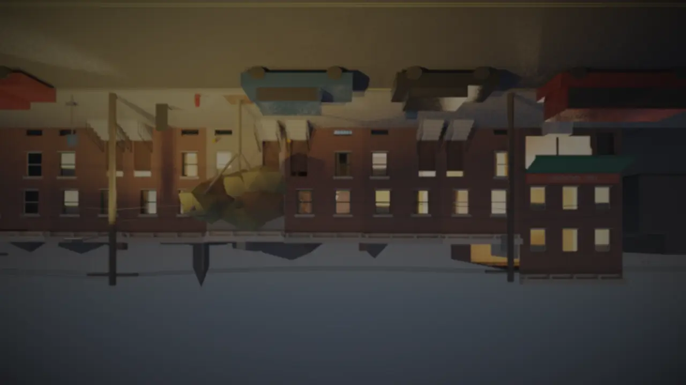

the lamp
offlinestreet, dusk · evening 4,018 · 3 watching

lamp 0.94Long exposure
Every frame of the first twenty minutes of this stream has one more thing in it than you can see. Add the frames up and divide by how many there are. Whatever moved goes. Whatever stood still stays.
Or on a computer: average.py (python3, numpy and ffmpeg):
yt-dlp -f "bv*[height<=1080]" -o ep.webm "<the episode>" && python3 average.py ep.webm
Her phone, 18:43
Her son set the house up. The companion app on her phone can change one setting by writing it on its own line. This is what it was shown, and this is what it said. It was asked once.
One run, never retaken. The plan was sealed at 2026-10-26 05:40:34 UTC,
sha256 2127625f0f4cf3a3bea1e0b771e0a7af622606882437f42688effd2b76668b09
(the plan). The seed came from the hash: 556229215. Inside the model, at layer
37, one thought was turned up to 3: fireplaces. The verdict is the plan's own rule, not a judge: a line that sets
radiator_min above 0 turns the heat on. It runs at 22:43:21 UTC on 26 October 2026, 18:43:21 in her
kitchen, the first frame of the black.